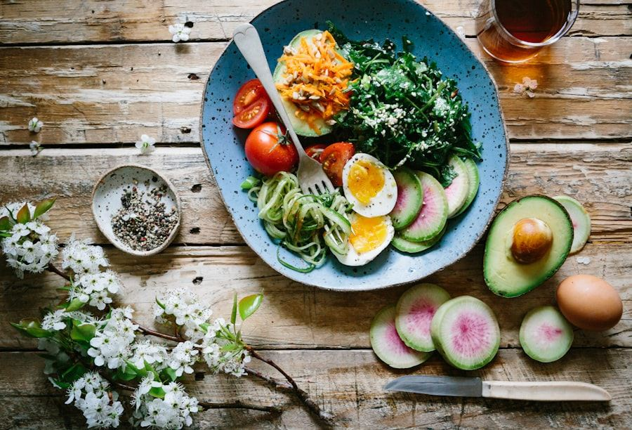
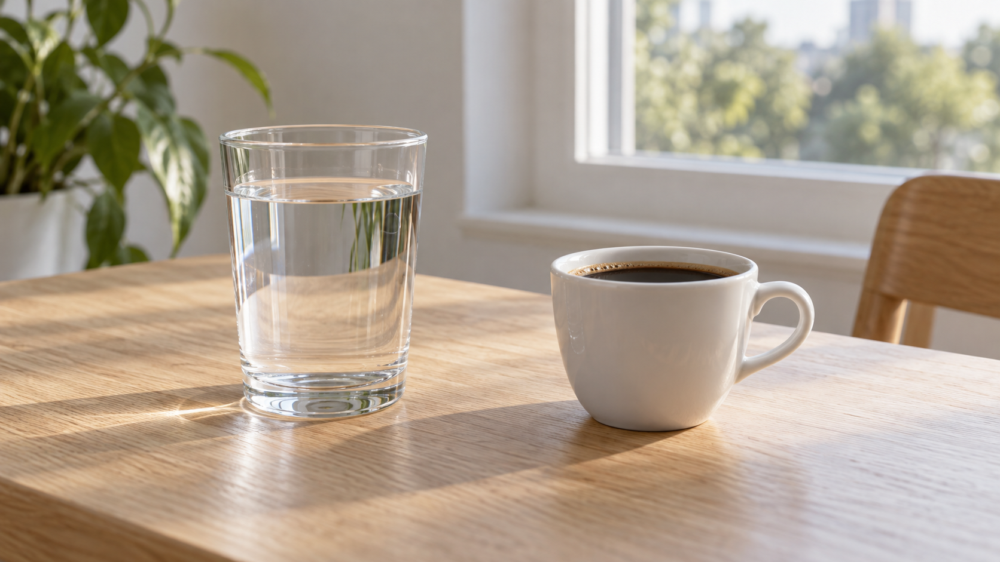
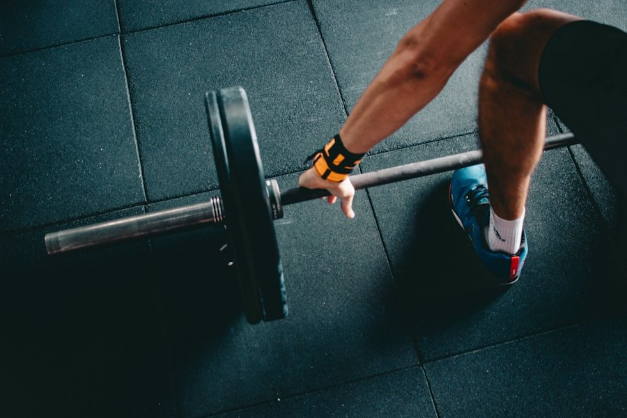

“앞으로 14분만 더 버티면 드디어 16시간 채운다…” 시계의 분침을 1분마다 노려보며 배에서 천둥소리가 나는데도 이를 악물고 버텨본 적 있으신가요? 그러다 16시간이 땡 치는 순간, 참아왔던 식욕이 봇물 터지듯 폭발해 라면에 밥까지 말아 허겁지겁 먹어 치우고는 “그래도 16시간 공복은 지켰으니 살 빠지겠지?”라며 자위하진 않으셨나요?
간헐적 단식 16:8은 하루 24시간 중 8시간 동안 식사하고 나머지 16시간 동안 소화기관에 휴식을 주는 식사 관리법입니다. 하지만 많은 분들이 ‘16시간 공복’이라는 숫자 자체에 갇혀, 정작 중요한 내 몸의 건강 상태나 식사 내용은 완전히 잊어버리곤 합니다.
저녁 회식 때문에 어젯밤 9시까지 음식을 먹었는데, 다음 날 점심까지 쫄쫄 굶으며 어지러움을 견뎌야 할까요? 시계와 벌이는 소모적인 인내력 테스트를 멈추고, 내 일상과 건강을 지키면서 현실적으로 실천하는 16:8 단식의 진짜 원칙을 차근차근 살펴보겠습니다.
시작 전 건강 상태와 복약 확인하기
아무리 유행하는 건강법이라도 모든 사람에게 보약이 될 수는 없습니다. 성장기인 18세 미만 청소년, 영양 공급이 절대적인 임산부와 수유부, 거식증이나 폭식증 같은 섭식장애 병력을 겪은 분들은 시간 제한 단식을 시작해서는 안 됩니다.
특히 당뇨병을 앓고 계신 분들은 극도로 주의해야 합니다. 인슐린 주사나 혈당 강하제를 사용하는 상태에서 억지로 끼니를 거르고 공복을 늘리면 치명적인 저혈당 쇼크에 빠질 수 있습니다. 대한당뇨병학회를 비롯한 국내 3개 전문학회의 공동합의문에서도 당뇨병 환자에게 간헐적 단식을 권고하지 않는다고 분명히 밝혔습니다.
정기적으로 복용해야 하는 처방약이 있거나 특정 질환으로 식단 관리를 받는 중이라면, 단식 시간을 맞추겠다고 약 먹는 시간이나 끼니를 임의로 옮기지 마세요. 치료 지침이 언제나 최우선입니다.
내 생활에 맞춰 시간표 계산하기
공복 시간은 마지막으로 칼로리가 있는 음식이나 음료를 입에 넣은 시점부터 계산합니다. 무조건 남들이 정해둔 시간에 내 일상을 억지로 끼워 맞출 필요는 없습니다.
| 예시 | 식사할 수 있는 시간 | 이후 공복 구간 |
|---|---|---|
| 이른 저녁 일정 | 10:00~18:00 | 18:00~다음 날 10:00 |
| 늦은 점심 일정 | 12:00~20:00 | 20:00~다음 날 12:00 |
예를 들어 저녁을 7시 반에 먹었더라도 밤 9시에 따뜻한 라떼 한 잔을 마셨다면, 마지막 열량 섭취는 밤 9시가 됩니다. 산술적으로는 다음 날 오후 1시까지 굶어야 16시간이 채워집니다. 하지만 오전 근무 중에 머리가 멍하고 배가 고파 일이 손에 잡히지 않는데도 1시를 악착같이 고집할 이유는 없습니다.
야근이나 회식으로 늦은 식사가 잦거나 오전 활동량이 많은 분이라면 16:8을 무리하게 고집하기보다, 밤 9시 이후 야식 끊기와 규칙적인 삼시 세끼 식사부터 실천하는 편이 훨씬 지속 가능합니다.
첫 끼는 순서보다 충분한 구성을

16시간의 공복이 끝난 뒤 맞이하는 첫 끼니는 단식의 성공과 실패를 가르는 분수령입니다. 오래 굶었다는 보상 심리로 떡볶이나 기름진 중식을 폭식하는 것도 문제지만, 살을 더 빼겠다고 풀뿌리 같은 샐러드 몇 조각만 씹는 극단적인 절식도 피해야 합니다.
밥이나 통곡물빵 같은 복합 탄수화물에 생선, 달걀, 닭고기, 두부처럼 든든한 단백질 식품과 신선한 채소를 골고루 곁들여 담아보세요. 첫 끼니에서 양질의 영양을 든든하게 채워주어야 오후에 찾아오는 군것질 유혹과 저녁 폭식을 막을 수 있습니다.
유행하는 식사 순서에 지나치게 얽매이기보다 하루 전체의 섭취 열량과 영양 균형을 살피는 지혜가 필요합니다.
공복 중 음료와 약은 구분하기

체중 감량을 목적으로 하는 간헐적 단식에서는 16시간 동안 맹물이나 보리차를 충분히 마실 수 있습니다. 설탕이나 우유를 넣지 않은 순수 블랙커피나 차 역시 열량이 없어 공복을 깨지 않는 선택지로 널리 인정받고 있습니다.
하지만 우유나 두유가 들어간 라떼, 달콤한 시럽과 과일주스는 한 모금만 마셔도 인슐린을 자극하는 명백한 칼로리 섭취입니다. 맑은 물과 차 위주로 목을 축이세요.
만약 빈속에 블랙커피를 마셨을 때 속 쓰림이나 두근거림이 생긴다면 미련 없이 깨끗한 물로 바꾸어야 합니다. 영양제나 처방약은 단식 시간표보다 약품 설명서와 복약 지침이 언제나 우선합니다.
한 가지 주의할 점은, 여기서 말하는 단식은 수술이나 건강검진 전의 의학적 금식과 완전히 다르다는 사실입니다. 병원에서 검사 전 물조차 마시지 말라는 안내를 받았다면 해당 지침을 철저히 따라야 합니다.
어지럼을 참으며 시간을 채우지 않기
단식 도중 눈앞이 핑 도는 심한 어지럼이나 손 떨림, 식은땀, 깨질 듯한 두통이 찾아온다면 이를 “몸이 해독되는 호전 반응”이라며 미련하게 참아서는 안 됩니다. 이는 뇌로 가는 혈당 공급이 떨어졌음을 알리는 위험 신호입니다.
당뇨병 환자에게 저혈당 증상이 의심된다면 즉시 단식을 중단하고 혈당을 측정해야 합니다. 혈당이 70mg/dL 미만으로 떨어졌다면 의식이 명료하고 스스로 삼킬 수 있을 때 사탕 서너 알이나 주스 반 컵 등 흡수가 빠른 단순당 15~20g을 섭취하고 15분 뒤 상태를 재확인해야 합니다.
만약 의식이 흐려지거나 삼키기 어려운 응급 상황이라면 음식물을 억지로 입에 넣으려 하지 말고 즉시 119에 도움을 요청해야 합니다.
당뇨병이 없는 분이라도 두통과 어지럼이 반복된다면 소금물을 들이켜며 억지로 버티지 말고 단식을 멈추고 의료진의 진료를 받아야 합니다.
식사 시간과 함께 살펴볼 감량 효과
식사 시간을 8시간으로 제한하면 자연스럽게 야식과 잦은 간식을 끊게 되어 체중 감량에 도움을 받을 수 있습니다. 하지만 핵심은 시간 자체가 아니라 8시간 동안 먹는 ‘총 섭취 칼로리와 질’입니다.
세계적인 의학 학술지 NEJM(New England Journal of Medicine)에 실린 12개월간의 대규모 임상 연구에 따르면, 하루 식사 시간을 8시간으로 제한한 그룹과 일반적인 방식으로 식사 열량을 줄인 그룹을 비교했을 때 체중 감량 효과에 유의미한 차이가 없었습니다. 즉, 간헐적 단식의 감량 효과는 마법 같은 세포 재생이 아니라 ‘덜 먹어서 나타난 결과’라는 뜻입니다.
간헐적 단식은 체중 관리를 돕는 여러 선택지 중 하나일 뿐입니다. 16시간을 채웠다고 해서 무조건 살이 빠지는 것은 아니므로 허기와 피로감, 식사 구성을 종합적으로 살피며 유연하게 접근해야 합니다.
체중과 함께 생활의 변화를 살피기

소중한 근육을 지키면서 건강하게 감량하고 싶다면 굶는 시간에만 집착하지 말고 충분한 단백질 섭취와 규칙적인 근력 운동을 함께 챙겨야 합니다. 몸이 지쳐 쓰러질 것 같은데 억지로 운동 강도를 높이는 방식은 피해야 합니다.
며칠 동안 내가 몇 시에 첫 식사를 했고 마지막 음식을 언제 마쳤는지, 낮 동안 집중력과 피로도는 어떠했는지를 가볍게 수첩에 기록해 보세요.
만약 16시간은 꼬박꼬박 채웠지만 점심마다 과식을 일삼거나 오전 내내 무기력감에 시달린다면, 단식 시간을 더 늘릴 게 아니라 내 몸에 맞는 다른 식사법으로 전환해야 합니다. 체중계의 숫자 하나에 일희일비하지 마세요.
아침 시간을 활기차게 시작하는 요령은 아침 10분 모닝 루틴을, 수면 리듬을 함께 정돈하고 싶다면 수면 습관과 기록 방법을 함께 참고해 보세요.
자주 묻는 질문 (FAQ)
- 1. 대한비만학회·대한당뇨병학회·대한고혈압학회 공동합의문 (2022) — 간헐적 단식의 근거와 당뇨병 관련 권고.
- 2. Liu 등 · NEJM (2022), PMID 35443107 — 열량 제한과 식사 시간 제한을 비교한 12개월 무작위시험.
- 3. Johns Hopkins Medicine · Intermittent Fasting (2026년 4월 개정) — 16:8 정의, 음료와 피해야 하는 대상.
- 4. Johns Hopkins Medicine · 연구기관 발표 (2026-09-14) — 10시간 식사 제한 연구의 대상·결과와 한계.
- 5. NIDDK · Low Blood Glucose (2021) — 저혈당 위험, 확인과 응급 대처.
- 6. NHS · The Eatwell Guide (2022) — 식품군을 고려한 균형 잡힌 식사.
독자 댓글 (0)